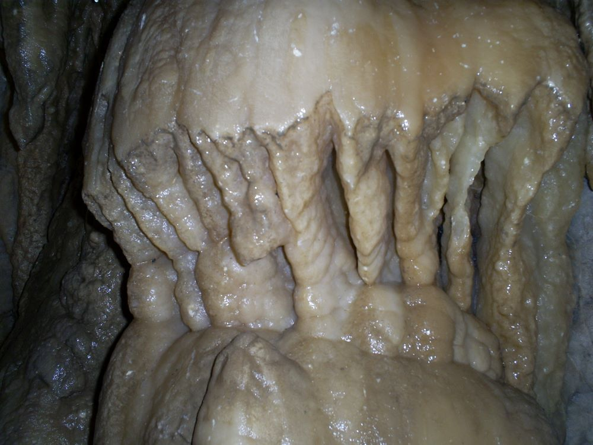
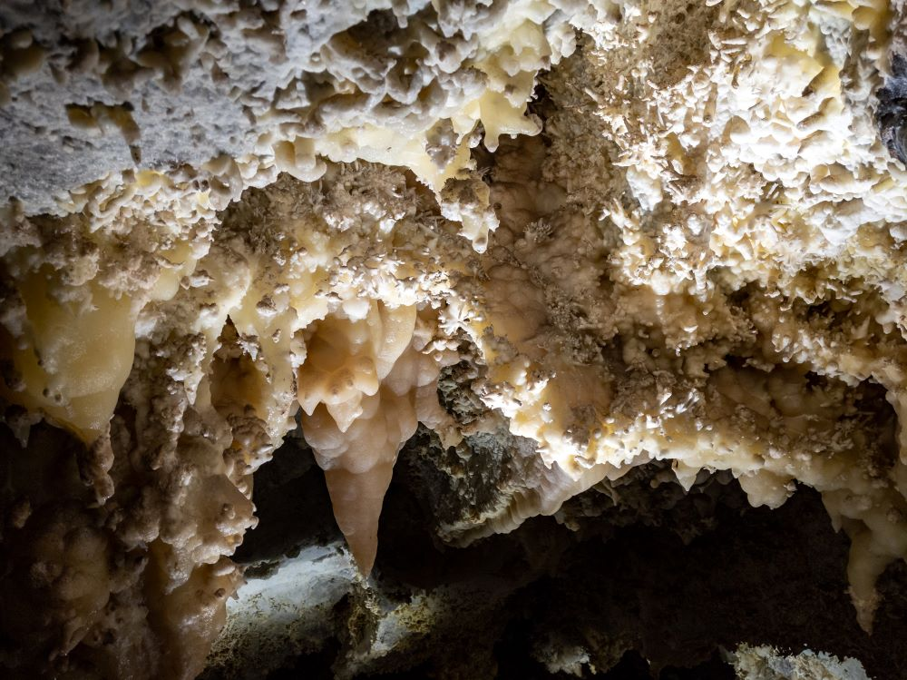
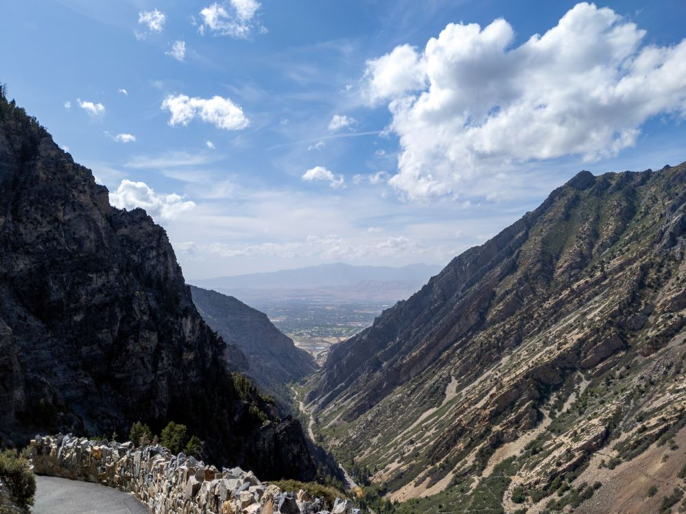
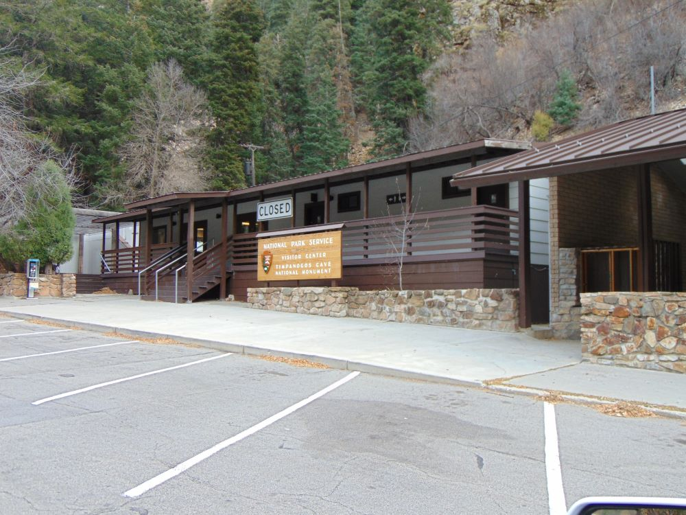

Limestone cave system accessible by a steep mountain trail, featuring guided tours through narrow passages filled with colorful formations and underground chambers.
General Information
Cave tours available May through September; closed in winter
Youth (6–15): $7
Children (under 5): $2
America the Beautiful Pass not valid for cave tours
How to Get There
From American Fork (10 mi): Take I-15 to exit 284, then follow UT-92 E (Alpine Loop Scenic Byway) up American Fork Canyon and follow signs to the monument visitor center.
Overview
Timpanogos Cave National Monument protects three connected limestone caves, Hansen Cave, Middle Cave and Timpanogos Cave, high on the side of American Fork Canyon in Utah’s Wasatch Mountains. Designated a national monument on October 14, 1922, and managed by the National Park Service, it covers about 250 acres and is known for colorful cave formations including stalactites, stalagmites, helictites and the famous “Heart of Timpanogos.” The caves can be seen only on ranger-guided tours, which begin with a steep, paved 1.5-mile hike that climbs more than 1,000 feet to the cave entrance. Visitors come for the hike, the views of the canyon, and a cool, 45°F underground walk through some of the most unusual cave decorations in the West.
Access
The monument is in American Fork Canyon along the Alpine Loop Scenic Byway (UT-92), about 30 minutes east of I-15 and roughly an hour south of Salt Lake City. From I-15, take exit 284 and follow UT-92 east up the canyon to the visitor center, where the cave trail begins; the road is paved all the way. Tickets are picked up at the visitor center, and visitors have 90 minutes from their ticket start time to hike up to the cave, so allow plenty of time for the climb. Parking at the visitor center can be limited on busy summer days. Strollers and wheeled vehicles are not allowed on the trail, and pets are not permitted on the trail or in the caves, although service animals are allowed.
Seasons
Cave tours usually run from May through September, depending on snow conditions and funding, and the monument is largely closed to cave tours the rest of the year. Summer is the busiest season, and the paved trail can be hot, with temperatures that can exceed 100 degrees, so carry at least a liter of water per person even though the cave itself stays near 45°F and a light jacket is needed. Late spring and early summer bring wildflowers along the trail and in the canyon, while fall brings color to the canyon slopes. In winter, snow typically blocks the upper part of the Alpine Loop and the cave is closed to tours, though the canyon below remains a quiet place for a drive.
Things to Do
Explore a Hidden World Beneath Mount Timpanogos
Timpanogos Cave National Monument preserves a spectacular cave system within the Wasatch Mountains of northern Utah. The monument protects three interconnected limestone caves filled with colorful formations, underground chambers, and unique geological features. Visitors can combine cave exploration with mountain scenery, wildlife viewing, and hiking in American Fork Canyon.
Take a Guided Cave Tour
The monument's primary attraction is a ranger-guided tour through Timpanogos Cave, Hansen Cave, and Middle Cave. Visitors travel through winding passages and chambers while learning about cave geology, rare formations, cave ecology, and the history of the caves' discovery and exploration.
See Unique Cave Formations
Timpanogos Cave is famous for its stunning underground features, including stalactites, stalagmites, flowstone, helictites, cave bacon, and the rare and distinctive "Heart of Timpanogos" formation. The cave system contains some of the most impressive and unusual cave formations in the western United States.
Enjoy Scenic Views of American Fork Canyon
The monument sits within the beautiful Wasatch Mountains and provides breathtaking views of American Fork Canyon. Visitors can enjoy mountain scenery, forested slopes, wildflowers, and dramatic canyon landscapes while traveling to and from the cave entrance.
Learn About Geology and Cave Conservation
Educational exhibits and ranger programs explain how caves form, the fragile nature of underground ecosystems, and the importance of preserving these unique geological resources. Visitors gain insight into millions of years of natural history hidden beneath the mountains.
Experience Wildlife and Mountain Recreation
The surrounding canyon supports a variety of wildlife, including deer, mountain goats, birds of prey, and small mammals. The area is also popular for hiking, photography, picnicking, scenic drives, and exploring the nearby Uinta-Wasatch-Cache National Forest.
Top Trails
Timpanogos Cave Trail
Length: Approximately 3 miles round trip
Elevation Gain: Approximately 1,100 feet
Difficulty: Strenuous
The monument's signature trail climbs steeply from the visitor center to the cave entrance. Along the way, hikers enjoy impressive views of American Fork Canyon, interpretive exhibits, and opportunities to observe local wildlife. A cave tour ticket is typically required to enter the cave system.
River Trail
Length: Approximately 1 mile round trip
Elevation Gain: Minimal
Difficulty: Easy
This short trail near the visitor center follows portions of the American Fork River and offers a pleasant walk through a forested canyon environment. It is ideal for visitors seeking a leisurely nature experience.
American Fork Canyon Trail Connections
Length: Various distances
Elevation Gain: Varies
Difficulty: Easy to Strenuous
Several nearby trails connect visitors to additional recreational opportunities throughout American Fork Canyon, including alpine lakes, waterfalls, mountain peaks, and scenic overlooks within the Wasatch Mountains.
Mount Timpanogos Area Trails
Length: Various distances
Elevation Gain: Moderate to Strenuous
Difficulty: Moderate to Difficult
The surrounding region features numerous hiking opportunities that showcase the dramatic landscapes of Mount Timpanogos, including wildflower meadows, alpine terrain, and panoramic views of northern Utah.
Visitor Centers
The monument’s visitor center sits at the base of the cave trail and is the starting point for every visit. It is where cave tour tickets are picked up, and where rangers and exhibits explain the geology, discovery and conservation of the caves. Tickets can be bought up to 30 days ahead online or by phone, and they often sell out on summer weekends. The visitor center operates on a seasonal schedule tied to the tour season, so check the National Park Service website for current hours before you go.
Camping and Lodging
There is no camping or lodging within the monument itself. Several national forest campgrounds line the Alpine Loop in American Fork Canyon nearby, including Timpooneke Campground and others managed by the Uinta-Wasatch-Cache National Forest, and these can be reserved through Recreation.gov. Hotels and motels are found in American Fork, Lehi and Pleasant Grove within about 15 to 30 minutes, with a larger selection in Provo and Orem to the south. Salt Lake City is roughly an hour away and offers the widest range of lodging, and Sundance Mountain Resort is also within about 45 minutes.
Sources: National Park Service official Timpanogos Cave National Monument information, including details on cave tours, geology, hiking trails, cave formations, visitor experiences, and monument history.
https://www.nps.gov/tica/
Additional information verified through National Park Service visitor guides covering the Timpanogos Cave Trail, cave conservation, educational programs, accessibility information, and recreational opportunities within the monument.
https://www.nps.gov/tica/planyourvisit/index.htm
Further information reviewed through Uinta-Wasatch-Cache National Forest recreation resources covering American Fork Canyon, nearby hiking trails, wildlife viewing, scenic drives, and mountain recreation opportunities surrounding Timpanogos Cave National Monument.
https://www.fs.usda.gov/uwcnf
This article uses material from the Wikipedia articles and official tourism pages for Timpanogos Cave National Monument, which are released under the Creative Commons Attribution-Share-Alike License 3.0. Additional information from National Park Service.






